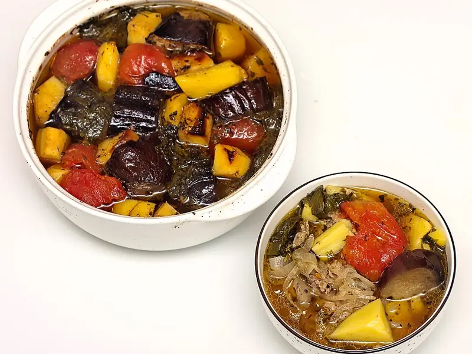

Чанахи в горшочках
Баранина с баклажанами, картошкой и помидорами, томлённая в горшочках в духовке
120 мин4 порц.499 ккал на порциюБ 30 · Ж 25 · У 38Кавказская кухня
Открыть в приложении: порции, таймеры, список покупок
Продукты на 4 порц.
- Баранина600 г
- Баклажан1 шт
- Картофель4 шт
- Помидоры4 шт
- Перец болгарский1 шт
- Лук репчатый2 шт
- Чеснок3 зуб.
- Кинза0,5 пучка
- Базилик по желаниюпо вкусу
- Хмели-сунели0,5 ч. л.
- Вода1 стак.
- Соль2 ч. л.
- Перец чёрный молотый0,5 ч. л.
Как готовить
- Нарежьте баранину кусками по 3 см. Баклажан нарежьте кубиками, посолите на 10 минут и отожмите.
- Картофель нарежьте крупными кубиками, лук полукольцами, перец полосками, помидоры дольками.
- Зелень порубите с чесноком, смешайте с хмели-сунели, солью и перцем.
- В каждый горшочек уложите слоями: баранину, лук, картофель, баклажан, перец, помидоры. Каждый слой посыпьте зеленью со специями.
- Налейте в каждый горшочек по 50 мл воды и закройте крышками.
- Поставьте горшочки в холодную духовку, включите 180 °C (средний жар) и томите 1,5 часа. Мясо готово, когда легко разделяется вилкой.
Совет. Горшочки ставьте только в холодную духовку, иначе глина треснет от перепада. Можно приготовить в одной утятнице, время то же.